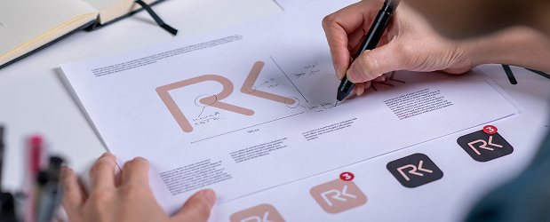

Como Medir o ROI de Branding para Micro e Pequenas Empresas
Para micro e pequenas empresas (MPEs), cada investimento precisa ser justificado. Quando se trata de branding, muitos empreendedores questionam: “Como saber se está valendo a pena?” Vamos explorar métodos práticos para medir o retorno sobre investimento (ROI) em branding especificamente para o contexto das MPEs.
Por que medir o ROI de branding é desafiador

O branding frequentemente gera resultados intangíveis que são difíceis de quantificar diretamente. Diferente de campanhas de marketing direto, onde você pode rastrear conversões imediatas, o branding trabalha construindo valor ao longo do tempo.
Métricas essenciais para MPEs medirem o ROI de branding
Reconhecimento e lembrança da marca
- Pesquisas de reconhecimento: Realize pesquisas simples perguntando aos clientes se reconhecem sua marca
- Teste de lembrança: Avalie se os clientes conseguem lembrar sua marca quando mencionada a categoria de produto/serviço
Engajamento nas redes sociais
- Menções espontâneas da marca
Impacto nas vendas
- Capacidade de cobrar mais que concorrentes
- Taxa de conversão: Aumento nas conversões após iniciativas de branding
- Valor médio de compra: Clientes tendem a gastar mais com marcas que confiam
Retenção e Fidelidade
- Frequência de compras repetidas
- Número de indicações de clientes
Estratégias para MPEs
- Defina objetivos claros antes de investir: Estabeleça metas específicas para seu investimento em branding
- Comece pequeno e meça constantemente: Inicie com investimentos menores e aumente conforme comprova resultados
- Combine branding com ações de marketing direto: Crie campanhas que construam marca enquanto geram vendas
- Foque em um nicho específico: MPEs têm mais sucesso quando direcionam seus esforços de branding para um segmento bem definido
- Consistência acima de tudo: Mantenha sua mensagem e identidade visual consistentes em todos os pontos de contato
Medir o ROI de branding para micro e pequenas empresas requer uma abordagem equilibrada entre métricas quantitativas e qualitativas. O segredo está em estabelecer uma linha de base antes de iniciar os investimentos em branding e monitorar regularmente as mudanças nas métricas escolhidas.
Para MPEs, o branding não é um luxo, mas uma necessidade estratégica que, quando bem executada e medida, pode gerar retornos significativos mesmo com orçamentos limitados.